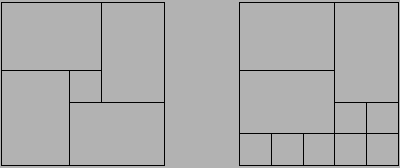

Beschrijving
Na het omwaaien van Mekelweg 4 werd de huisvestingproblematiek van de faculteit ITS voortvarend aangepakt. Het architectencollectief GROOTMOEDER kreeg opdracht een nieuw gebouw te ontwerpen. Ofschoon hun ontwerp op zijn minst opmerkelijk was, werd het na verrassend weinig geharrewar aangenomen en gerealiseerd.
Om hygiënische redenen werd besloten in alle ruimtes een tegelvloer te leggen. Er zijn tegels in diverse maten beschikbaar. Tegels mogen gedraaid worden. Elke zijde van elke tegel is echter een geheel aantal decimeters, hetzelfde geldt voor de te betegelen vloeren. Voor elke ruimte is vastgesteld welke tegels er gebruikt kunnen worden. In elke ruimte kan in elk geval een -tegel worden gebruikt. Alle tegels, groot of klein kosten 1 Euro per stuk (inclusief leggen). Omdat het gebouw toch al zo duur is, moet elke vloer tegen minimale kosten worden gelegd.
De architect heeft echter wel een esthetische eis: een betegelde vloer moet
een deelbare rechthoek zijn.
Definitie
Voorbeeld
Als de vloer is en de tegels resp. , dan is de linker betegeling niet geoorloofd. De rechter betegeling is wel geoorloofd, maar veel duurder (tweemaal zo duur).

Probleem
Gegeven een tegelset en een aantal vloeren, bereken voor elke vloer de
minimale kosten om deze vloer met deze tegelset deelbaar te beleggen.
Elke tegelset bevat gegarandeerd de tegel
, dus elke vloer kan
belegd worden.
Invoer (lezen uit: tegelen.in)
De eerste regel van de invoer bevat het aantal tests. Dan volgt een aantal tests. Elke test is als volgt opgebouwd:
Uitvoer (schrijven naar standard-output)
De uitvoer bevat, voor elk testgeval apart op een regel, de minimale kosten van betegeling van de vloeren.
Voorbeeld
Invoer
2
2
1 1 2 3
3
4 4 5 5 6 6
3
1 1 1 10 3 5
3
4 4 5 6 4 10
Uitvoer
6 10 6
16 2 3